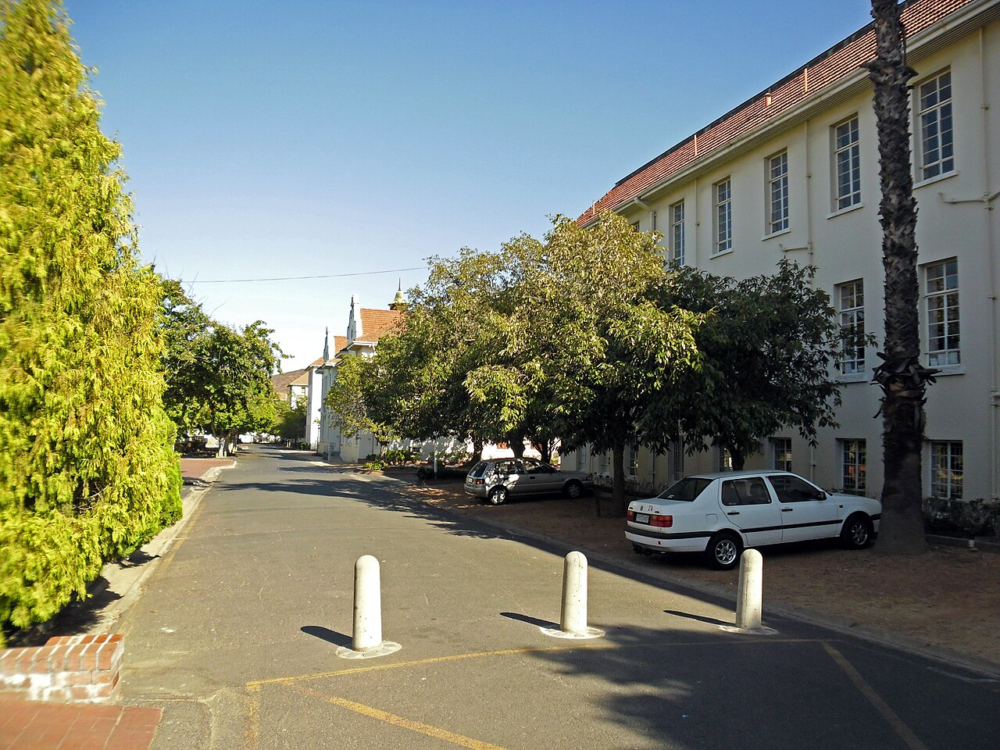
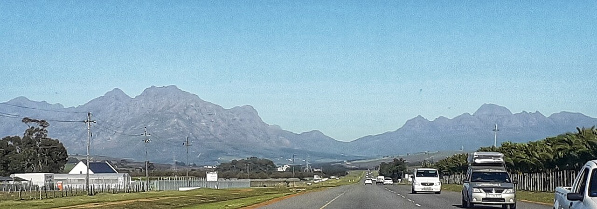

Stellenbosch University campus, viewed from the Merensky building

Photograph by Lourie Pieterse · 2011 · CC BY-SA 3.0.

Responsive display cropping only. Downloaded Wikimedia thumbnail bytes unchanged.
Public photographs used to introduce Stellenbosch and its surroundings. These are not photographs taken by Khaled Masoumifard.

Photograph by Lourie Pieterse · 2011 · CC BY-SA 3.0.
Responsive display cropping only. Downloaded Wikimedia thumbnail bytes unchanged.

Photograph by Khanya Ntantiso Arosi · 2020 · CC BY-SA 4.0.
Responsive display cropping only. Downloaded Wikimedia thumbnail bytes unchanged.

Photograph by Orrling · 1994 · CC BY-SA 3.0.
Responsive display cropping only. Downloaded Wikimedia thumbnail bytes unchanged.